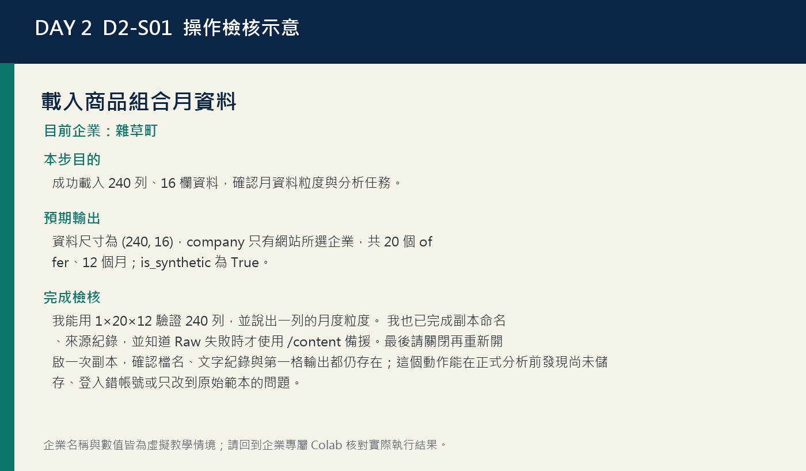
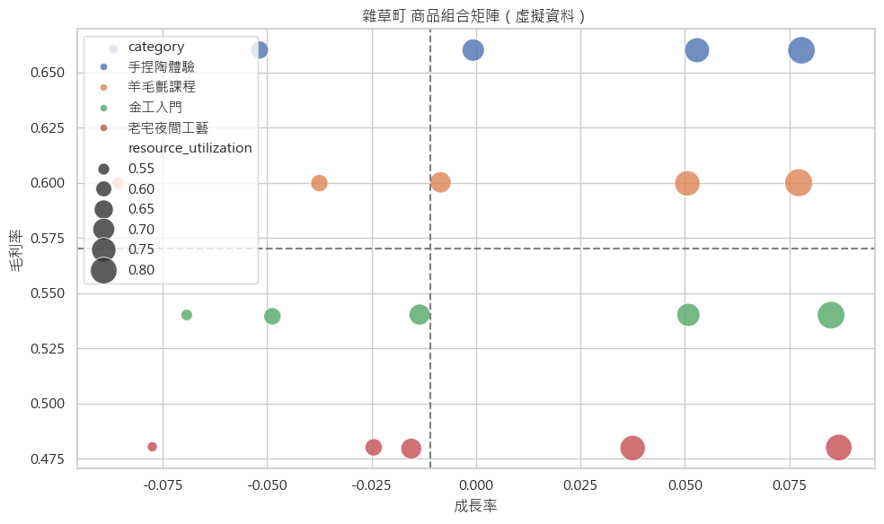
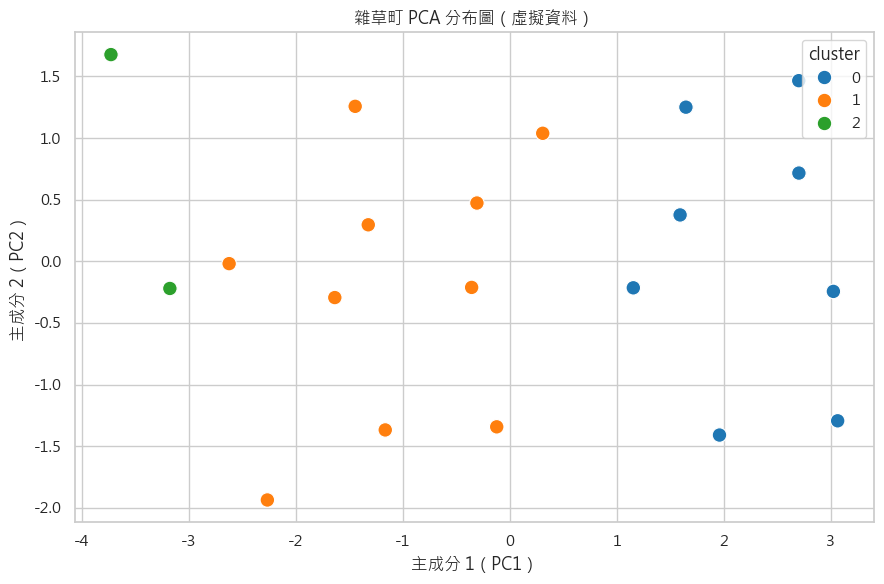

雜草町｜DAY 2
辨識體驗方案角色，在容量限制下安排培養、維持或調整。
分析對象：手捏陶、羊毛氈、金工與夜間工藝衍生方案的多項 KPI。
資料線索：群號不是排名；角色必須回到毛利、成長、回購、滿意與利用率解釋。
今日交付：雜草町商品角色與資源配置表
DAY 2 / 4
從多指標 KPI、KMeans 與 PCA 到可執行的商品角色
之後仍可切換；選擇只保存在這個瀏覽器。
雜草町｜Day 2 專屬下載
義大開發｜Day 2 專屬下載
盛香珍 × 亙美質珍｜Day 2 專屬下載
寶島眼鏡｜Day 2 專屬下載
當日驗收將於 7/14 16:30（台灣時間）開放。
16:30 開放Selected enterprise
切換上方企業後，本任務、故事、圖表與下載資源會同步更新。
雜草町｜DAY 2
分析對象：手捏陶、羊毛氈、金工與夜間工藝衍生方案的多項 KPI。
資料線索：群號不是排名；角色必須回到毛利、成長、回購、滿意與利用率解釋。
今日交付：雜草町商品角色與資源配置表
義大開發｜DAY 2
分析對象：樂園一日票與其他方案的毛利、成長、回購、滿意及利用率。
資料線索：利用率高可能是受歡迎，也可能代表服務容量已接近風險線。
今日交付：義大開發商品角色與資源配置表
盛香珍 × 亙美質珍｜DAY 2
分析對象：經典小泡芙、聯名禮盒等商品的獲利、成長、回購與產能指標。
資料線索：分群只能描述相似輪廓；食品產能、保存與供應風險仍需人工納入。
今日交付：盛香珍 × 亙美質珍商品角色與資源配置表
寶島眼鏡｜DAY 2
分析對象：日常鏡框與其他方案的毛利、成長、回購、滿意與利用率。
資料線索：群數指標接近時，要優先考量輪廓是否能說明與能否採取行動。
今日交付：寶島眼鏡商品角色與資源配置表
Business story
主要情境會依上方選擇切換；四家企業共通的分析方法可展開查閱。
雜草町
雜草町同時面對熱門時段接近滿載與新方案需要培養的衝突。你會把月資料彙整成方案輪廓，使用 KMeans 與 PCA 看相似性，再以供應限制修正演算法結果，形成可執行的個人配置建議。
義大開發
義大開發的票券、住宿與服務方案各有不同毛利和容量條件，單一排行榜無法回答資源該放哪裡。你會建立標準化 KPI 輪廓、比較群數並人工命名角色，最後把容量風險寫進配置建議。
盛香珍 × 亙美質珍
盛香珍 × 亙美質珍必須在常態品、成長品與聯名新品之間分配有限產能。你會將月資料彙整為商品輪廓，使用分群和 PCA 協助閱讀，再以供應限制與至少兩項 KPI 提出角色和行動。
寶島眼鏡
寶島眼鏡同時經營鏡框、驗配與會員服務，熱門方案可能推高門市利用率並影響體驗。你會建立多指標輪廓、比較群數、閱讀 PCA，再把角色命名與門市容量證據連在一起。
Learning goals
能把月資料正確彙總成商品／服務層級 KPI，先加總分子分母再計算比率。
能用毛利、成長、資源利用、回購、滿意度與波動描述組合取捨。
能說明尺度如何影響距離，並用 StandardScaler 建立可比較特徵。
能比較 k=3、4、5 的 inertia、silhouette 與商業可解釋性。
能建立可重現 KMeans，並用原始 KPI 輪廓而非群號命名。
能解讀 PCA scores、loadings 與解釋變異，且不把圖形當準確率或因果。
能提出保留、培養、調整、驗證行動並納入容量與前置期風險。
520-minute route
依 D2-S01 個人操作並完成：我能用 1×20×12 驗證 240 列，並說出一列的月度粒度。 我也已完成副本命名、來源紀錄，並知道 Raw 失敗時才使用 /content 備援。最後請關閉再重新開啟一次副本，確認檔名、文字紀錄與第一格輸出都仍存在；這個動作能在正式分析前發現尚未儲存、登入錯帳號或只改到原始範本的問題。
依 D2-S02 個人操作並完成：我能驗證 20 offer×12 月=240，且只剩目前企業。
離開螢幕、補水並確認下一段 Cell ID。
依 D2-S03 個人操作並完成：我能驗算兩項商品的營收、毛利率、利用率與波動分母。
依 D2-S04 個人操作並完成：我能說出四個視覺編碼，並為一項候選同時寫支持與反證。
整理目前輸出，下一段再繼續操作。
依 D2-S05 個人操作並完成：我能解釋為何標準化，以及 mean≈0、std≈1 所代表的檢核。
午餐與休息；請保留已儲存的 Colab 副本。
依 D2-S06 個人操作並完成：我能引用三組分數，並說明為何本次先選 k=3 而非永遠選 3。
依 D2-S07 個人操作並完成：我能用至少四個原始 KPI 描述一群，且不把 cluster 0 說成冠軍。
讓眼睛與注意力休息，再進入後續分析。
依 D2-S08 個人操作並完成：我能解釋 scores、loadings、兩軸變異與二維投影限制。
依 D2-S09 個人操作並完成：我完成四類行動，每項有 KPI、企業理由與容量／供應護欄。
依 D2-S10 個人操作並完成：我已備妥可重跑 Notebook、核心輸出與短摘要草稿，並知道 17:00 後的作答、實作與送出順序。
個人完成 10 題當日概念與輸出判讀題。
使用網站所選企業的專屬 Notebook 完成實作與決策摘要。
確認分享權限、貼上 Colab 網址與摘要後個別送出。
Follow along
從上到下完成。每一步都包含輸入、操作、預期輸出、解讀與檢核。
Student step
成功載入 240 列、16 欄資料，確認月資料粒度與分析任務。
Day 2 Notebook → [D2-S01] 載入商品組合月資料
從課程網站按下「在 Colab 開啟」，登入 Google 帳號後選擇「檔案 → 在雲端硬碟中儲存副本」。
找到 [D2-S01] 儲存格，先閱讀上方目的與資料來源說明。
直接按儲存格左側播放鍵；Notebook 會優先從 GitHub Raw 讀取公開虛擬 CSV。
若網路讀取失敗，才從網站下載目前企業卡片的專屬 CSV，再上傳到 Colab /content。
在輸出區核對資料來源、資料尺寸、前三列與 is_synthetic=True。
把資料粒度寫成一句完整句子：一列代表哪一家公司、哪個對象、哪個時間單位。
把目前 Colab 副本重新命名為「DayX_姓名_企業名稱」，確認右上角顯示已儲存到雲端硬碟。
在本段下方新增一個文字儲存格，記錄資料來源、執行日期與你負責的企業，作為後續分析稽核線索。
企業已由網站卡片綁定，ENTERPRISE_NAME 已由企業專屬 Notebook 綁定，不需也不應手動變更；若需改用另一企業，請回網站開啟對應的專屬 Notebook。
執行本段唯一程式碼儲存格；看到資料預覽與虛擬標記後才進入下一段。
資料尺寸為 (240, 16)，company 只有網站所選企業，共 20 個 offer、12 個月；is_synthetic 為 True。
240 列來自目前企業的 20 個 offer 各 12 個月；這是月資料，還不是可直接分群的 20 列商品輪廓。
FileNotFoundError：找不到 day-2-{enterprise-id}-product-portfolio.csv
尚未上傳或使用 Day 1 檔名。
刪除錯誤檔，重新下載 Day 2 CSV，上傳到 /content 後重跑。
輸出是 (96, 12)
誤用 Day 1 市場需求資料。
回網站下載 day-2-{enterprise-id}-product-portfolio.csv，重啟工作階段並由第一格執行。
我能用 1×20×12 驗證 240 列，並說出一列的月度粒度。 我也已完成副本命名、來源紀錄，並知道 Raw 失敗時才使用 /content 備援。最後請關閉再重新開啟一次副本，確認檔名、文字紀錄與第一格輸出都仍存在；這個動作能在正式分析前發現尚未儲存、登入錯帳號或只改到原始範本的問題。

Student step
處理日期與教學缺失，確保公司篩選後為 240 列、20 個 offer。
Day 2 Notebook → 2. 檢查資料並確認綁定企業
執行前確認 df 為 Day 2 資料，再閱讀日期轉型與虛擬標記 assert。
查看 repeat_rate、satisfaction 以企業內中位數補值的規則。
確認企業名稱已由網站卡片綁定，不修改企業參數。
執行後核對資料筆數 240、商品／服務數 20。
確認 company_df 的企業唯一值為 1，月份為 12。
抽查同一 offer_id 是否剛好有 12 列，再把結果記入資料檢核表。
企業已由網站卡片綁定，ENTERPRISE_NAME 已由企業專屬 Notebook 綁定，不需也不應手動變更；若需改用另一企業，請回網站開啟對應的專屬 Notebook。
執行本格，確認企業唯一值為 1、資料列數為 240；之後從本格依序執行到最後。
企業資料應為 240 列、20 個 offer，每個 offer 各 12 個月；前三列只含網站所選企業。完成日期、缺失與虛擬標記檢核後才可彙整 KPI。
公司篩選把不同量級與不同單位分開，20 個 offer 各有 12 月，後續才能彙總成 20 列輪廓。repeat_rate 與 satisfaction 的補值規則是教學簡化，正式決策仍需記錄缺失原因與敏感度。
AssertionError 或 company_df 為空
企業名稱拼錯、少了 X 或多空白。
先顯示 df['company'].unique()，直接複製完整名稱後重跑。
資料筆數不是 240 或 offer 數不是 20
使用錯檔、前面刪列或 company 篩選未生效。
恢復原始 CSV，由第一格重跑；核對 company_df 只有一個公司值。
我能驗證 20 offer×12 月=240，且只剩目前企業。
Student step
從月資料彙總 20 列輪廓，正確計算分子、分母、利用率與波動。
Day 2 Notebook → 3. 建立商品／服務 KPI
先在月資料新增 revenue=units_sold×price 與 gross_profit=units_sold×(price-unit_cost)。
閱讀 groupby 的鍵：offer_id、offer、category，確認每項彙總成一列。
檢查銷量、容量、營收、毛利用 sum；回購、滿意、成長、前置期用 mean；月銷量波動用 std。
執行後確認 portfolio 有 20 列，且 revenue、gross_profit 皆非負。
驗算 gross_margin_rate 是總毛利÷總營收，resource_utilization 是總銷量÷總容量。
驗算 demand_volatility 是月標準差÷月均銷量，而不是除以全年總量。
從前十名表挑兩項，引用至少三個 KPI 比較。
維持原始 KPI 公式；如要新增指標，另存副本並寫明分子、分母與單位。
依序執行 KPI 格，確認 portfolio 生成後才進入績效矩陣。
portfolio 應由 240 列月資料彙整為 20 列 offer 輪廓，至少包含營收、毛利、毛利率、成長率、回購率、滿意度、利用率與需求波動。精確值依企業專屬輸出為準。
總量先加總再計算比率可保留正確權重。毛利額回答賺多少，毛利率回答每元營收留下多少；利用率高可能代表受歡迎，也可能代表容量風險；波動高表示月度不穩，需搭配供應與角色判斷。
gross_margin_rate 出現 inf 或 NaN
某項營收為 0 或資料被改壞。
先檢查 revenue 分母與 price、units_sold；不要用 fillna 隱藏零分母。
portfolio 仍有 240 列
未執行 groupby agg，或顯示的是 company_df。
確認 display 的物件是 portfolio，且 groupby 鍵只有 offer 層級欄位。
我能驗算兩項商品的營收、毛利率、利用率與波動分母。
Student step
同時讀取成長、毛利率、資源利用率與品類，形成候選而非結論。
Day 2 Notebook → 4. 畫出績效矩陣
執行散點圖，確認 x 軸為 growth_rate、y 軸為 gross_margin_rate。
確認氣泡大小代表 resource_utilization，顏色代表 category。
找出水平與垂直虛線，說明它們是本企業中位數而非固定標準。
在四象限各挑一個點，記錄 offer 名稱與三個 KPI。
為右上象限提出一項培養假設，也為其找一項容量或波動反證。
為左下象限提出調整或限量驗證，不得直接等同下架。
本段維持中位數切線；若改平均數，需在圖標題與解讀中明示。
執行後用滑鼠或 portfolio 表對照點位；Notebook 靜態圖不顯示名稱時需以 KPI 排序查找。
產生一張成長率×毛利率氣泡圖，兩條中位數虛線形成四象限；氣泡大小隨利用率改變。
右上象限表示相對高成長、高毛利率候選，但不保證毛利額大或容量充足；左上可能是成熟獲利，右下可能是成長引流或成本待改善，左下需診斷而非自動淘汰。切線是相對目前企業資料的中位數。
NameError：portfolio is not defined
跳過 KPI 彙總段。
先完成 D2-S03 並確認 portfolio 20 列，再畫矩陣。
氣泡全部差不多或某一點極大
resource_utilization 計算或零分母異常。
回 KPI 表檢查利用率分子分母與極端值，不先調整 sizes 掩蓋問題。
我能說出四個視覺編碼，並為一項候選同時寫支持與反證。

Student step
理解尺度支配，建立平均接近 0、標準差約 1 的特徵矩陣。
Day 2 Notebook → 5. 標準化分群特徵
核對 feature_cols 包含毛利率、成長率、資源利用率、回購率、滿意度、需求波動。
確認 inf 被換為 NaN，再以各欄中位數補值。
執行 StandardScaler.fit_transform，產生 X_scaled 與 scaled_df。
在 describe 表確認每欄 count=20、mean 接近 0、std 約 1.03。
找出每個標準化特徵的最小、最大值，判斷是否有遠離平均的項目。
用一句話解釋 z-score 正值、負值與零附近的相對意義。
本段固定六特徵；不要把 revenue 原始金額直接加入，除非重新論證尺度與角色意義。
執行後保留 X_scaled，後續 k 比較、KMeans、PCA 都使用同一矩陣。
標準化矩陣應為 20×6；各欄平均值應非常接近 0，尺度約落在 1 個標準差附近。請核對欄位順序固定，精確最大或最小值依所選企業為準。
標準化把每欄轉成相對自身平均的標準差距離，使滿意度 1–5 與比率 0–1 在距離中較可比較。它不表示六個 KPI 在商業上同等重要；若要權重不同，需另行設計並透明說明。
Input X contains infinity
比率存在零分母，未執行 replace 或來源 KPI 異常。
先回 KPI 查零分母，再確認 feature_matrix 有 replace inf 與明確補值。
標準化後 mean 明顯不接近 0
顯示的是原始 portfolio，或 scaler 未套用正確六欄。
確認查看 scaled_df.describe()，欄位與 feature_cols 完全一致。
我能解釋為何標準化，以及 mean≈0、std≈1 所代表的檢核。
Student step
結合 inertia、silhouette 與商業可解釋性選擇探索群數。
Day 2 Notebook → 6. 比較群數 k
閱讀 for k in range(3, 6)，確認會比較 3、4、5 三種群數。
確認每個 KMeans 使用相同 random_state=20260714、n_init=10。
執行並記錄每個 k 的 inertia 與 silhouette。
讀左圖看 inertia 隨 k 下降，讀右圖找 silhouette 較高者。
寫出選 k 的三項證據：數值、圖形、商業可解釋性。
明確寫下『四種商品角色不代表必須 k=4』。
比較範圍固定 k=3、4、5；進階延伸可擴大，但需確保每群樣本數可解讀。
執行後產生三列表格與兩張折線；保留 k_scores 供 BEST_K 自動選擇。
群數比較表應有 k=3、4、5 三列，包含 inertia 與 silhouette；inertia 通常隨 k 增加下降，silhouette 則用來比較分離程度。最佳候選與數值依所選企業為準。
不能只選 inertia 最小的 k，因為它會隨群數增加而下降；也不能把 silhouette 當準確率。請同時看 silhouette、群大小與輪廓是否可解釋，再記錄選擇的群數與理由。
ValueError：Number of labels is 1
資料或 X_scaled 異常，KMeans 只產生一群。
確認 portfolio 20 列、X_scaled 無缺失且 k 在 3–5，再由標準化段重跑。
每次執行分數改變
自行移除 random_state 或 n_init 設定。
恢復 random_state=20260714、n_init=10，確保可重現。
我能引用三組分數，並說明為何本次先選 k=3 而非永遠選 3。

Student step
用固定設定建立群集，從原始 KPI 輪廓命名而非把群號當排名。
Day 2 Notebook → 7. 建立 KMeans 群集
執行 BEST_K 選擇與 KMeans.fit_predict，確認目前企業採用的 k。
確認 portfolio 新增 cluster 欄，群號從 0 開始但沒有優劣順序。
查看 cluster_profile 的六項原始 KPI 平均，不用 z-score 向主管解釋。
讀熱圖時逐欄比較，不把顏色跨不同單位直接當大小。
為每群列出兩項相對高、兩項相對低指標。
提出暫定名稱並加上『候選』，保留後續人工修改。
BEST_K 由 k_scores 的最高 silhouette 產生；若人工改 k，需另存版本並說明理由。
執行後應出現採用 k 的文字、cluster_profile 表與熱圖。
輸出所選群數的群集輪廓表，每列是一個群集，各欄為 6 項 KPI 的平均值及群內項目數。群號只是一個識別碼；群數、大小與輪廓依企業專屬 Notebook 為準。
請用至少兩項 KPI 為每群命名，例如成長／獲利候選、引流／容量管理或調整／限量測試；不要把群號大小當成好壞排名，角色還要回到供應限制檢查。
NameError：k_scores 或 X_scaled 不存在
跳過選 k 或標準化段。
從 D2-S05 依序重跑標準化、k 比較，再建立群集。
熱圖看似每欄顏色差異不一致
使用原始 KPI 且各欄尺度不同，單一色階會受整體中心影響。
以表格數字逐欄比較；若要標準化輪廓圖，另作一張並清楚標示。
我能用至少四個原始 KPI 描述一群，且不把 cluster 0 說成冠軍。

Student step
正確區分 PCA scores、loadings 與解釋變異，保守解讀二維圖。
Day 2 Notebook → 8. 用 PCA 呈現群集
確認 PCA 使用同一個 X_scaled，n_components=2。
執行後記錄 PC1、PC2 解釋變異比例及合計。
在散點圖辨識每個商品的 score 位置與 cluster 顏色。
查看 loadings 表，找出 PC1、PC2 絕對值較大的變數。
用『方向由哪些 KPI 共同構成』描述主成分，不硬取單一自然名稱。
檢查不同群是否重疊，並寫出二維投影可能遺失的資訊。
本課固定 2 個主成分供視覺化；不可把 explained_variance_ratio 當模型準確率。
執行後取得 [PC1, PC2] 解釋變異、散點圖與 6×2 loadings 表。
PCA 應輸出前兩主成分的解釋變異、loading 表與企業專屬散點圖。兩軸解釋變異合計應介於 0 與 1；各軸主要受哪些 KPI 影響依所選企業為準。
PCA 是把 6 個標準化 KPI 投影成兩個方便閱讀的方向，不是準確率、因果軸或企業天然維度。請以 loading 說明座標方向，並用原始 KPI 表核對每個角色。
PCA 圖只有一種顏色
cluster 欄未建立或 hue 指錯欄位。
先完成 KMeans，確認 portfolio['cluster'] 有 k 個唯一值，再重跑 PCA。
把 0.732 說成分群準確率 73.2%
混淆解釋變異與有標籤預測指標。
改寫為 PC1 保留標準化特徵總變異的約 73.2%，不代表分群正確率。
我能解釋 scores、loadings、兩軸變異與二維投影限制。

Student step
以透明規則產生候選角色，再依企業定位、容量與前置期人工修正。
Day 2 Notebook → 9. 由人命名群集並提出行動
閱讀 overall 中位數與 suggest_role 四條透明規則。
執行後查看每個 offer 的 cluster、suggested_role 與三項關鍵 KPI。
確認角色是在商品列層級判斷，不等同整個 cluster 名稱。
讀取 supply_risk：利用率>0.85 且前置期高於中位數才標高風險。
挑四項分別提出保留、培養、調整、驗證行動，每項引用數字。
至少修改一個演算法候選角色，並寫出品牌或營運理由。
為高利用或長前置期項目加入容量、批量或停止護欄。
suggest_role 與 supply_risk 門檻是透明教學規則；可在決策欄人工修正，但需保留原候選與理由。
執行後產生 20 列角色與風險表；改用另一企業 Notebook 時從 D2-S02 重新執行。
角色與資源表應保留 20 個 offer，列出人工角色、至少兩項支持 KPI、容量或供應風險及建議行動。候選商品、群號與配置依所選企業資料及參數為準。
角色規則以企業中位數形成候選，仍需用 KPI 與供應限制逐項驗證。成長與毛利高可培養，但需看容量；利用高但毛利不高可能是引流或需漲價；回購高可設會員／加購；其餘先調整或限量驗證。供應風險門檻未涵蓋所有真實限制。
所有商品都被分到同一角色
overall 或特徵欄被改、資料只剩少量列。
恢復 portfolio 20 列與原始 suggest_role 規則，檢查各 KPI 中位數。
明明利用率很高卻 supply_risk 顯示一般
規則同時要求利用率>0.85 且前置期高於中位數。
逐項檢查兩個條件；若業務認為單一條件已高風險，可人工升級並說明。
我完成四類行動，每項有 KPI、企業理由與容量／供應護欄。
Student step
17:00 前只備妥個人商品角色與資源配置表草稿、完成 Run All 與繳交前檢核；正式選擇題、實作與提交依 17:00 後時程進行。
Day 2 Notebook → D2-S10 個人成果整理與繳交前檢核
重新啟動執行階段並 Run All，確認企業專屬 Notebook 可從頭重建。
核對自動產生的核心圖表、表格與輸出檔，不手動塗改數值。
依當日實作題先備妥參數調整、核心輸出判讀與短摘要草稿。
確認 Google Form 作答入口可開啟，但 17:00 前不開始作答、不送出。
檢查 Colab 分享權限、檔名、企業名稱與資料版本，將問題記錄下來。
此段不改模型主線；只核對企業綁定、輸出檔與稍後實作需調整的 1–2 項參數。
執行 Restart and Run All 與輸出檢核；17:00 前只備妥草稿，不送出正式成果。
所有核心圖表、表格與輸出檔都能由乾淨執行階段重建，個人摘要草稿已備妥。
此時是繳交前的品質檢核，不是提前驗收。17:00–17:20 完成選擇題，17:20–18:40 完成個人實作，18:40–19:00 設定分享與送出。 Colab 初學者可以用『一段一段』的方式檢查：先看儲存格左側是否出現綠色勾選，再看最後一行輸出是否符合講義的合理範圍，最後才寫下這個數字對決策的意義。若看到紅字，不要連續重按執行；請先複製最後一行錯誤訊息，回到對應 Cell ID 檢查檔名、參數與執行順序。你不需要記住所有程式，但要能說清楚自己調了什麼、輸出怎麼變、以及目前仍不能下什麼結論。
輸出 CSV 中文亂碼
用不支援 UTF-8 BOM 的工具開啟或另存時改編碼。
確認 Notebook 使用 encoding='utf-8-sig'，以 Excel 匯入 UTF-8 或 Google Sheets 開啟。
Restart and Run All 在 PCA 或角色段失敗
前面儲存格被跳過、手動改欄名或 X_scaled 未建立。
還原原始 Notebook，不需修改企業參數，重新上傳 CSV 後完整重跑。
調整 BEST_K 後圖表與決策表的群號對不起來
只重跑 KMeans 儲存格，後面的群集輪廓、PCA 與角色規則仍保留舊結果。
先記錄原始 BEST_K，再由群數設定格向下依序執行到輸出格。比較時只看輪廓 KPI 與角色證據，不把群號大小當成名次；若仍不一致，Restart and Run All 後再只改一次參數。
我已備妥可重跑 Notebook、核心輸出與短摘要草稿，並知道 17:00 後的作答、實作與送出順序。
教學設計與教材製作｜恩恩統計家教｜www.enentutor.com